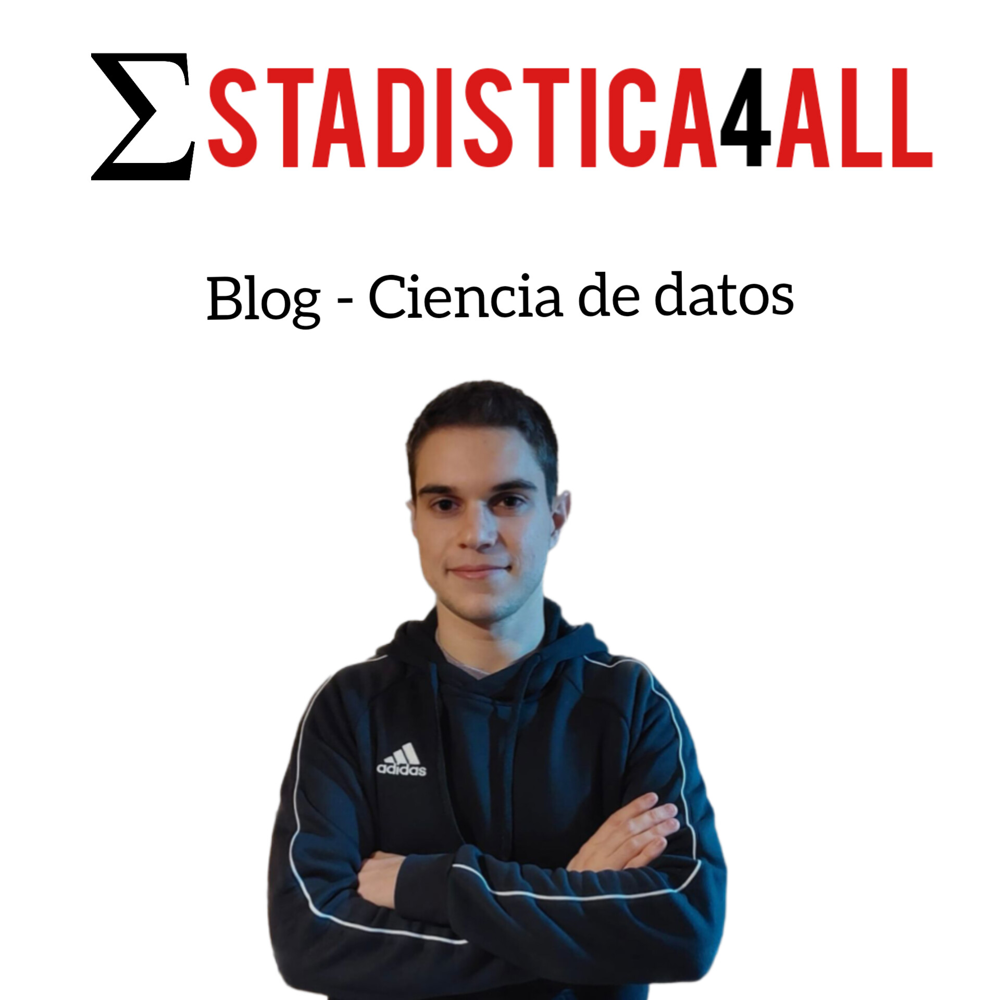

Fabio Scielzo Ortiz
Soy el creador del blog Estadistica4all. Además soy estudiante de estadística en la universidad Carlos III de Madrid. Me considero una persona pro-activa, con muchas ganas de continuar profundizando en el maravilloso mundo de la ciencia de datos. Estadistica4all es un proyecto creado con el proposito de divulgar sobre estadistica, machine learning y ciencia de datos en general. Si te apasiona la ciencia de datos puedes colaborar con el blog, escribiendo algún articulo interesante sobre algun tema enmarcado en esta disciplina. Si realmente te interesa, no te lo pienses y escribenos a alguna de nuestras direcciones de contacto.